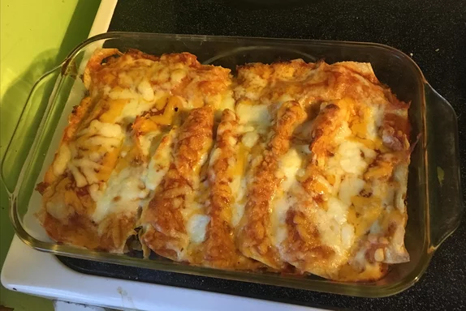

Recipes
Teriyaki Shrimp and Vegetable Stir-Fry

Recipe Summary
"Not authentically Mexican in the slightest, but holy buckets are they good! Great way to use up leftover rotisserie chicken."
- krimille
Ingredients
- 2 tablespoons olive oil
-
- ¼ cup chopped yellow onion
- ½ leftover rotisserie chicken, chopped
- ¼ cup crumbled cooked bacon
- 2 tablespoons roasted garli
- ½ teaspoon salt
- ½ teaspoon ground black pepper/li>
- ½ teaspoon garlic powder
- 1 bunch green onions, chopped
- 2 tablespoons ranch dressing
- 2 tablespoons sour cream
- 15 (6 inch) corn tortillas, or more to taste
- 2 cups shredded Cheddar-Monterey Jack cheese blend
- 1 cup mild enchilada sauce
Method
- Preheat the oven to 450 degrees F (230 degrees C). Spray a 9x12-inch brownie pan with cooking spray..
- Heat olive oil in a large skillet over medium heat. Add onion and cook until soft, about 5 minutes. Stir in chicken, bacon, and roasted garlic. Season with salt, pepper, and garlic powder. Stir in green onions.
- Mix ranch dressing and sour cream together in a small bowl. Remove chicken mixture from heat and stir just enough ranch mixture into the skillet to barely coat chicken.
- Hold 1 tortilla and spoon 2 tablespoons chicken mixture across the middle. Sprinkle 1 tablespoon Cheddar-Monterey Jack cheese blend over chicken and roll tortilla up. Place filled tortilla, seam-side down, against the short end of the pan so it does not unroll. Repeat with remaining tortillas and filling until pan is jammed full of enchiladas.
- Pour enchilada sauce on top of filled tortillas to cover without drowning them. Sprinkle remaining Cheddar-Monterey Jack cheese blend generously on top of everything.
- Bake in the preheated oven until bubbly on top, about 15 minutes.
Nutrition facts
465 calories; protein 20.9g; carbohydrates 38.8g; fat 26g; cholesterol 58.8mg; sodium 821.6mg.